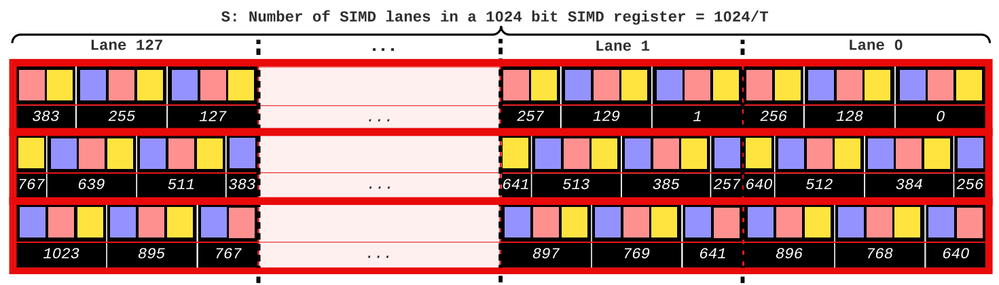
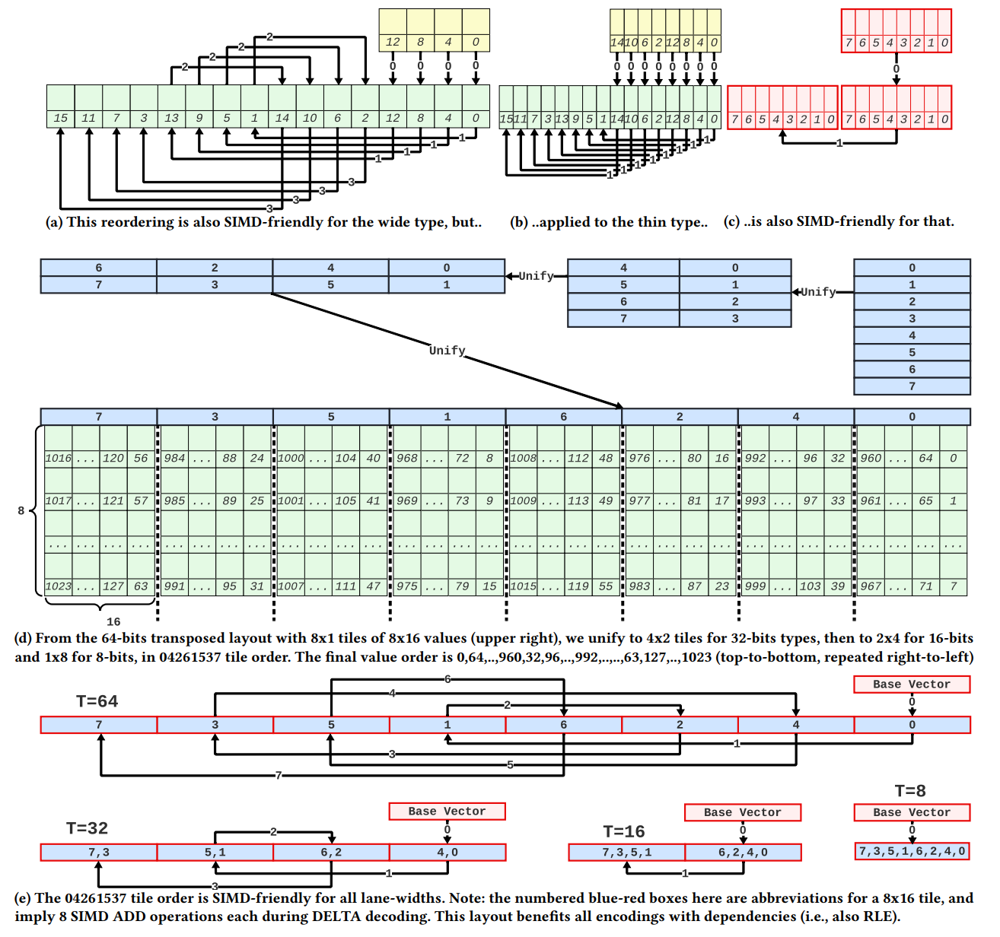
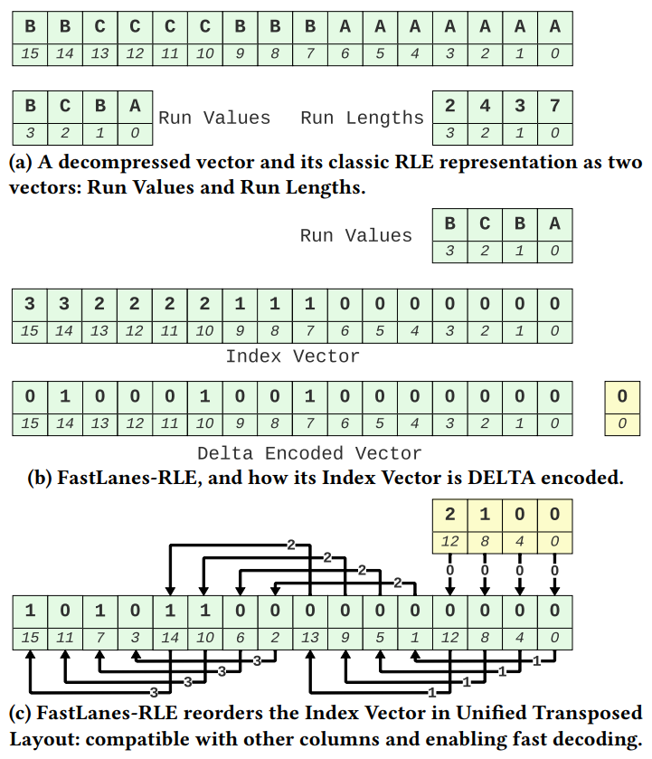
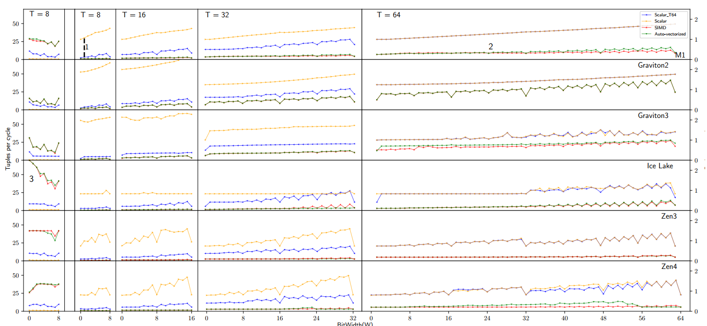
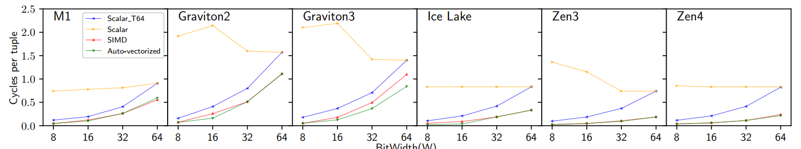
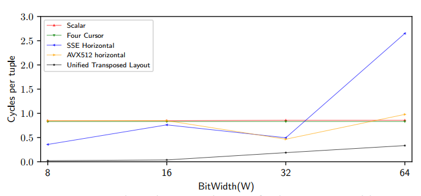

论文摘要
FastLanes项目旨在通过更好的数据并行性显著加速所有常见轻量压缩方案（DICT、FOR、DELTA和RLE）的解码。论文通过两种主要思想重新设计压缩布局：
- 在位打包基本操作中泛化值交错技术，以虚拟1024位SIMD寄存器为目标
- 将所有表的元组按相同的统一转置布局重新排序，将元组块置于共同的"04261537"顺序中
这种方法通过定义由所有SIMD方言支持的简单操作符组成的虚拟1024位指令集，解决了硬件多样性增加带来的软件开发、维护和未来验证挑战。交错和元组重排序的布局实际上使标量解码更快，从当今宽发射CPU中提取更多数据并行性。
在Intel、AMD、Apple和AWS CPU上的微基准测试显示，FastLanes将解码加速了数倍（每CPU周期解码>40个值）。FastLanes可以使查询更快，因为压缩数据减少了带宽需求，而解码几乎是免费的。
核心问题
唯一关键问题
如何在异构硬件环境下实现高效的数据并行轻量压缩解码？
现有方法的局限性
- 现有压缩布局针对特定SIMD宽度优化，无法适应不断变化的硬件环境
- 不同SIMD指令集存在不对称性，导致代码难以跨平台移植
- 压缩算法中的顺序依赖（如DELTA、RLE）难以在SIMD中高效处理
- 不同列的数据类型宽度不同，需要统一的布局方案
真实世界痛点
硬件多样性
现代CPU SIMD宽度从64位发展到512位，ARM架构在服务器和终端设备中日益普及
性能瓶颈
传统压缩解码方法无法充分利用现代CPU的数据并行能力
技术债务
特定SIMD指令集代码导致维护成本高昂和未来验证困难
系统复杂性
不同列需要不同车道宽度但需统一排序，增加了系统设计复杂度
核心贡献 (4C模型)
Concept (新概念)
- 虚拟1024位SIMD寄存器(FLMM1024)：抽象硬件无关的SIMD计算模型
- 统一转置布局：适用于所有车道宽度的数据重排序方案
- FastLanes-RLE：将RLE编码映射到DELTA编码的新方法
Challenge (解决的难题)
- 多种SIMD宽度（25年增长8倍）
- 异构ISA（x86、ARM、POWER、RISC-V）
- 解码依赖（DELTA和RLE中的顺序依赖）
- 布局与车道宽度依赖
- 代码可移植性
- LOAD/STORE瓶颈
Construction (方法设计)
- 1024位交错位解包
- 简单FLMM1024指令集
- 列重排序（转置）打破数据依赖
- 04261537块顺序的统一转置布局
- 标量代码自动向量化
Claim (性能提升)
- 解码速度>1000亿整数/秒
- 单核70值/周期（1400亿值/秒@2GHz）
- 相比传统方法加速3-40倍
- 标量代码性能接近显式SIMD内部函数
- 查询端到端性能提升高达7倍
方法原理解析
1024位交错位解包
将逻辑上连续的位打包值轮询分布到128个8位车道，最大化解码性能。
伪代码示例 (W=3, T=8)
FLMM1024 r0, r1; r0 = LOAD<8>(in+0); r1 = AND_RSHIFT<8>(r0, 0, MASK3); STORE<8>(out+0, r1); r1 = AND_RSHIFT<8>(r0, 3, MASK3); STORE<8>(out+1, r1); r1 = AND_RSHIFT<8>(r0, 6, MASK2); r0 = LOAD<8>(in+1); STORE(out+2, OR<8>(r1, AND_RSHIFT<8>(r0, 2, MASK1))); // ... 继续处理剩余值
图1: 1024位交错布局示意图
统一转置布局设计
将1024个值组织为8个8×16的转置块，按"04261537"顺序排列，确保所有车道宽度（8/16/32/64位）都能获得最大数据并行性。
图6: 统一转置布局示意图
值排序结果
0,64,...,960,32,96,...,992,...,63,127,...,1023
FastLanes-RLE创新
传统RLE问题
- 嵌套循环（元组迭代+长度迭代）
- 短长度时的分支预测失败
- SIMD加速仅限于长运行长度
FastLanes-RLE方案
- 将RLE映射到DELTA编码
- 使用16位或8位索引向量
- 对索引向量进行DELTA编码（仅需1位/值）
- 平均运行长度≤12时压缩比比传统RLE更好
图7: FastLanes-RLE示意图
与相关工作对比
| 方法 | 位打包布局 | DELTA解码 | 特点 |
|---|---|---|---|
| 水平布局 (Zukowski等) | 顺序存储 | 数据依赖 | 需要PERMUTE指令 |
| 4路垂直布局 (Lemire等) | 4路交错 | D4/DVI | 针对128位SSE优化 |
| 8路/16路垂直布局 (Habich等) | 8路/16路交错 | - | 针对AVX2/AVX512优化 |
| FastLanes | 1024位交错 | 统一转置布局 | 硬件无关，自动向量化 |
实验结果与分析
关键实验指标
周期/值
解码单个值所需的CPU周期数
值/周期
单个周期内解码的值数量
端到端查询性能
压缩扫描与未压缩扫描的对比
位解包性能结果
图8: 位解包性能对比
关键发现
- SIMD实现比标量快40-70倍（8位类型）
- 标量_T64比朴素标量快8倍
- 编译器自动向量化与显式SIMD内部函数性能相当
- 最高性能：70值/周期（8位类型，W=1）
平台表现
- Graviton CPU SIMD性能较弱
- Apple M1具有更多指令级并行性(ILP)
- Zen4支持AVX512但不比Zen3快（使用两个AVX2单元）
DELTA解码性能
图10: DELTA解码性能
图15: DELTA解码方法对比
性能亮点
- 统一转置布局比替代方案快3-40倍
- 8位DELTA解码>40值/周期
- 标量_T64从数据并行性中受益
端到端查询性能
图12: 端到端查询性能

实际价值
- FastLanes使交叉点从4倍压缩比移动到几乎任何数据
- 8线程下比未压缩快7倍，比标量解码快4倍
- 减少RAM带宽需求，缓解内存瓶颈
结论与未来工作
证明的价值
技术突破
- 硬件无关的数据并行压缩解码可行且高效
- 标量代码+自动向量化可替代平台特定SIMD代码
- 统一转置布局有效解决顺序依赖问题
实际影响
- 压缩扫描可在实际查询中提高性能
- 减少技术债务，提高代码可维护性
- 为未来硬件演进提供保障
潜在局限
- 1024值块大小可能影响压缩率（需要异常处理机制）
- 在需要严格顺序的场景中可能需要选择向量
- 实验主要在CPU上进行，GPU/TPU适配性待验证
未来工作方向
技术扩展
- 级联轻量压缩方法组合
- GPU/TPU等广泛并行硬件适配
- 压缩向量表示的查询操作符优化
系统集成
- 完整系统集成与端到端基准测试
- 开源大数据文件格式实现
- 递归压缩物理子列块设计